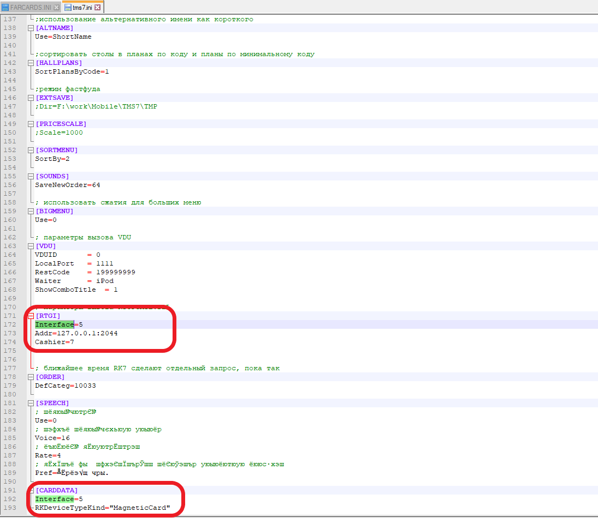

iiko
Установка плагина
Копируем папку LoonaPluginSettings в C:\ProgramData
Копируем папки LoonaPlugin (и iikoWaiter5 при необходимости) в директорию iikoFront/Plugins (в нашем случае C:\Program Files\iiko\iikoRMS\Front.Net\Plugins)
Запускаем iiko Front (помним что для данного метода необходима лицензия типа iikoFrontPaymentPlugin)
Создание Скидки
- Открываем iiko Office
- Переходим в раздел Дисконтная Система -> Скидки и Надбавки
- Добавляем скидку
- Пишем свои названия скидок как показано ниже, они будут использованы в настройках плагина
- Тип скидки ставим Скидки и Надбавки
- Нажимаем Далее

- Убираем галочку "Можно назначить вручную", остальное по усмотрению ресторана

- Тип ставим “Процент” и назначаем процент данной скидки

Нажимаем Далее и заканчиваем установку скидки.
Повторяем добавление скидки со всеми имеющимся уровнями скидок
Создание Купона
Для создания купона пройдите все пункты для создания скидки, но измените указаный процент скидки на 100%.
Создание Бонуса или Подарочного сертификата
Добавляем внешний вид оплаты. Переходим в раздел “Розничные продажи” нажимаем на “Тип платы” и добавляем новую оплату.
Обязательно указываем данные так же:
- Наименование - LoonaPayment
- Тип - Внешний тип оплаты
- Название в чеке - Электронная карта
- Безналичный тип - LoonaPayment
Сохраняем
Настройки плагина
Открываем Браузер
Заходим на http://localhost:1234/settings
Задаем настройки:
- Api access token - доступен после создания сканера в кабинете (подробнее в разделе настройки кабинета) или по запросу от поддержки компании Loona
- Api base url - https://api.loona.ai
- Plugin url - http://localhost
- Waiter port - 1234
Далее заполняем детали всех имеющихся уровней скидок в кабинете, и называем их так же как названы соответствующие уровни скидок в iiko office

- Устанавливаем мобильное приложение iikoWaiter5 если нужно
Активация сканирования в iiko waiter
Зайдите в localhost:8100/settings через браузер
Пройдите к "Loyalty System Integration Settings"
Задайте настройки:
- Loyalty plugin address: localhost:1234/api/op
- Отметьте "галочкой" Is External Loyalty Enabled
- Сохраните настройки
Если не можете зайти в настройки по ссылке выше:
Зайдите в кассу
Нажмите на "Дополнения" и затем на "iikoWaiter Настройки"

- Откроется QR код, отсканируйте его и пройдите по ссылке

Активация 2D канера
Заходим в раздел Сотрудники -> Сотрудники и добавляем сотрудника
Обязательно введите имя сотрудника "Loona"
Ставим галочку "Только для плагинов"
Ставим галочку на "Сотрудник"
Добавляем должность - "Системный Администратор"

Далее, пройдите в секцию "Дополнительные сведения"
Обязательно введите ПИН-код: 1945
Сохраните изменения

- Перезагрузите кабинет
Настройки в кабинете
Редактирование макета:
Для использования скидок, подарочных сертификатов и бонусов в системе iiko штрихкод на карте должен содержать Номер Карты. Для настройки штрихкода на Номер Карты:
Зайдите в ваш личный кабинет Loona
Перейдите в раздел Макеты
Зайдите в
 редактирование того макета на который хотите настроить сканер
редактирование того макета на который хотите настроить сканер

Перейдите в секцию Дизайн
Нажмите на штрихкод, в настройках поля откроются настройки штрихкода
Поменяйте значение на Номер Карты
Для использования купона:
В значении штрихкода поменять значение на “своё значение”
Поменять своё значение на ${pid}/№Продукт, где “№Продукт” это номер под которым позиция (блюдо) зарегистрирована в iikoOffice.
Использовать карты Loona
Создание API token сканера для карты
Для интеграции с системой iiko вам необходимо создать сканер в кабинете Loona и использовать его токен доступа.
Для создания нового сканера:
- Зайдите в ваш личный кабинет Loona

В разделе Сканер нажмите на Создать сканер.
Введите название нового сканера
Выберите тип сканера - "App".
Выберите макеты с картами которые предназначены для сканирования, или отметьте Получить полный доступ чтобы сканер работал со всеми вашими макетами.
Нажмите Создать
В списке созданных сканеров появится новый сканер со своим токеном доступа (Идентификационный номер), этот номер используется при настройке плагина.
r_keeper
Установка плагина
Перед установкой нобходимо:
Убедиться в наличии .Net Framework версии 4.6.2. или выше. Версия бывает доступна на ОС Windows 7 и новее.
В течении использования плагина, нужно выключить Windows Firewall или открыть доступ для порта плагина (port 1234)
Необходимо настроить имеющийся FARCARDS.ini (настройки ниже)
Скачайте и откройте папку плагина Loona

В папке для вашего удобства содержится FARCARDS со всеми необходимыми настройками в нём. Если имеется FARCARDS, можно настроить его вручную.
Настройки FARCARDS
- Скопируйте «Extdll.dll» и «Extdll.ini» в папку UCS/FARCARDS

Откройте файл «FARCARDS.INI» в текстовом редакторе
В поле DLL впишите «ExtDll.dll» и сохраните изменения

- Запустите «Farcards.exe – install»
Установка плагина - продолжение:
Откройте папку Loona R-keeper
Скопируйте папку Loona в папку где хратится r_keeper и FARCARDS

- Откройте скопированую папку Loona, и запустите из нее файл «ServiceInstaller.exe» как администратор

- Сервис будет установлен, после установки зайдите в Windows -> Services (Сервисы), найдите Loona r-keeper plugin и убедитесь что «Startup Type» стоит автоматичекий (Automatic)

- Не закрывайте окно сервисов
Создание MCR алгоритма
- Откройте папку где содержится R-keeper и запустите R-keeper «Manager»

- Далее, откройте r_keeper менеджер и пройдите в Сервисы -> Обработка Сигналов Устройств -> MCR алгоритмы
- Откроется страничка существующих алгоритмов. Убедитесь что у вас имеется алгоритм loona.

Создайте новый алгоритм для элекртонных карт
Для создания нового алгоритма можно просто скопировать любой имеющийся алгоритм и вставить его в окно алгоритмов.
После этого переименуйте скопированый алгоритм на loona.
Нажмите на алгоритм и откроются свойства справа, поменяйте статус на Active и затем убедитесь что все настройки совпадают с настройками представленными ниже:
- Нажмите на скрипт, и откройте окно скрипта с помощью иконки слева.

- В окне скрипта замените имеющийся скрипт на код расположенный ниже:
function MCR1000028(DeviceSignal: Integer; DeviceIdent: Integer; var Parameter: String): Boolean;
var enc: integer; id, ratio, couponeCode :integer;
var encShift, couponCodeShift :integer;
var couponSeparateSymbol :String;
var idString:String;
var cardCodeResult:Int64;
begin
Result:=false;
ratio :=1000;
encShift :=48;
couponCodeShift:=36;
couponSeparateSymbol := '/';
if pos('-', Parameter) > 1 then begin
Enc := StrToIntDef(copy(Parameter, 1, pos('-', Parameter) - 1),-1);
if Enc>0 then begin
idString := copy(Parameter, pos('-', Parameter)+1, length(Parameter));
if pos(couponSeparateSymbol, idString) > 1 then begin
couponeCode := StrToIntDef(copy(idString, pos(couponSeparateSymbol, idString)+1, length(idString)),-1);
idString := copy(idString, 1, pos(couponSeparateSymbol, idString) - 1)
end;
id := StrToIntDef(idString,-1);
cardCodeResult := (enc shl encShift ) and (StrToInt64('0x7FFF')shl encShift);
cardCodeResult := cardCodeResult or ((couponeCode shl couponCodeShift) and (StrToInt64('0xFFF')shl couponCodeShift) ) ;
cardCodeResult := cardCodeResult or id;
Parameter :=Int64ToStr(cardCodeResult);
Result:=true;
end;
end;
end;
- Нажмите "Ок" и закройте окно
Настройка PDS
В настройку PDS входит:
Создание PDS интерфейса
Создание и настройка кассового сервера (устройство)
Создание валюты для оплаты с PDS (не обязательно для скидкочной лояльности)
Введение интерфейсов PDS FARCARDS.ini и TMS.ini (при необходимости и наличии мобильного официанта)
Введение интефейса в MCR алгоритм
Натройка:
- В r_keeper менеджере и пройдите в Сервис -> Интерфейсы

- В открывшемся окне создайте новый PDS (или можно настроить имеющийся), и введите данные как показано ниже
Далее, нужно создать кассовый сервер (устройство) и валюту PDS
Пройдите в Сервис -> Стаанции и Устройства, откройте Cash Server вашего ресторана и создайте "устройство" с PDS интерфейсом.
В поле PDS Server Name введите название вашего интерфейса как показано ниже
Выберите "Yes" на Pass ALL Reciepts XML data и Pass ALL Bills XML data

Далее, для создания валюты пройдите в Деньги->Валюты
В разделе оплаты картами создайте PDS оплату
В поле максимальный процент введите 100.00
В интерфейсе введите свой PDS интерфейс

Далее, введите данные о PDS интерфейсе в FARCARDS и TMS
Убедитесь что значение в поле Код записано в файлах TMS.ini и FARCARDS.ini:
- в файле TMS.ini пройдите в р аздел [CARDDATA] и поменяйте значение Interface на Interface = (введите значение Кода)
- далее, в том же файле дайте то же значение для Interface в разделе [RTGI] как показано ниже

Убедитесь что название созданой PDS совпадает с названием указаным в FARCARDS.ini
- в файле FARCARDS.ini пройдите в раздел [pds_netk] и поменяйте значение NetServerName на NetServerName = (введите название PDS)
*имейте ввиду, что поочередность введения данных в файлах имеет значение. В TMS.ini сначала впишите Interface, а затем RKDeviceTypeKind.
При возникновении проблем при проведении транзакции, проверьте PDS_netk.log и удестоверьтесь что на FARCARDS запросы приходят справильного интерфейса. Запросы могут приходить с предустановленного интерфейса, в этом случае можно *выключить предустановленный интерфейс***
Далее, зайдите в созданый вами MCR алгоритм и выберите созданый PDS в поле "Обьект"
Создание Бонуса или Подарочного сертификата
Зайдите в r_keeper менеджер
Пройдите в типы бонусов
Создайте новый бонус и назовите его LoonaBonus
Пройдите в меню в раздел «Деньги» и откройте «Скидки и Наценки»
- Откроется окно управления скидок и наценок, наведите мышь на поле «All» и с помощью правой кнопки мышки создайте новый тип скидок

- Откроются «Свойства», в них введите Название своей скидки и поменяйте статус на Активный

- Пройдите в окно «Скидки/Нацинки» и создайте новую скидку (Нажмите правой кнопки мышки на свободое поле, из возникших опций выберите «Новая скидка»)
- Введите название вашей лояльности, пока что не меняйте статус на активный
- Откройте детализацию вашей лояльности двойным кликом на иконку

- Создайте новую детализацию (Нажмите правой кнопки мышки на свободое поле, из возникших опций выберите «Новая детализация»)
- Откройте поле настроек детализации, и укажите "тип бонуса": LoonaBonus

- Сохраните изменения

- Пройдите обранто в «Свойства» вашей скидки и поменяйте статус на активный «Active»

- Сохраните изменения, но еще не закрывайте окно «Скидки и Надбавки»
Создание Скидки
Откройте систему r_keeper и зайдите в неё
Пройдите в меню в раздел «Деньги» и откройте «Скидки и Наценки»
- Откроется окно управления скидок и наценок, наведите мышь на поле «All» и с помощью правой кнопки мышки создайте новый тип скидок
- Откроются «Свойства», в них введите Название своей скидки и поменяйте статус на Активный
- Пройдите в окно «Скидки/Нацинки» вашей новой скидки и создайте новую скидку (Нажмите правой кнопки мышки на свободое поле, из возникших опций выберите «Новая скидка»)
- Введите название вашей скидки, пока что не меняйте статус на активный
- Откройте детализацию вашей скидки двойным кликом на иконку
- Создайте новую детализацию (Нажмите правой кнопки мышки на свободое поле, из возникших опций выберите «Новая детализация»)
- Откройте поле настроек детализации, и поменяйте процент скидки на проценты скидок настроеные в кабинете
- Сохраните изменения
- Пройдите обранто в «Свойства» вашей скидки и поменяйте статус на активный «Active»
Повторите все пункты по созданию новой детализации для каждого уровня скидок имеющихся в вашем кабинете
Сохраните изменения, но еще не закрывайте окно «Скидки и Надбавки»
Создание Купона
Для создания купона пройдите все пункты для создания скидки, но измените указаный процент скидки на 100%.
Необходимые Настройки в офисе и плагине
Откройте ваш браузер и пройдите по адресу: «localhost:1234/settings»
Откроется поле настроек плагина.
Задаем настройки:
- Api access token - доступен после создания сканера в кабинете (подробнее в разделе настройки кабинета) или по запросу от поддержки компании Loona
- Api base url - https://api.loona.ai
- Plugin url - http://localhost
- Waiter port - 1234
Далее, Введите необходимые параметры для настройки скидки и сохраните параметры. Код вашей скидки, бонуса или купона вам доступен в свойствах скидки в r_keeper manager.


Сохраните изменения параметров плагина
Вернитесь в «Сервисы», выделите сервис Loona r-keeper plugin, обновите сервис (сервис должен выключится после обновления), затем запустите сервис

Настройки в кабинете
Редактирование макета:
Для использования скидок, бонусов и подарочных сертификатов в системе r_keeper штрихкод на карте должен содержать Номер Карты. Для настройки штрихкода на Номер Карты:
Зайдите в ваш личный кабинет Loona
Перейдите в раздел Макеты
Зайдите в
редактирование того макета на который хотите настроить сканер

Перейдите в секцию Дизайн
Нажмите на штрихкод, в настройках поля откроются настройки штрихкода
Поменяйте тип штрихкода на QR
Поменяйте значение на Номер Карты
Для использования купона:
В значении штрихкода поменять значение на “своё значение”
Поменять своё значение на ${pid}/№Продукт, где “№Продукт” это номер под которым позиция (блюдо) зарегистрирована в iikoOffice.
Использовать карты Loona
Создание API Token сканера для карты
Для иинтеграции с r_keeper вам необходимо создать сканер в кабинете Loona и использовать его токен доступа.
Для создания нового сканера:
- Зайдите в ваш личный кабинет Loona
В разделе Сканер нажмите на Создать сканер.
Введите название нового сканера
Выберите тип сканера - "App".
Выберите макеты с картами которые предназначены для сканирования, или отметьте Получить полный доступ чтобы сканер работал со всеми вашими макетами.
Нажмите Создать
В списке созданных сканеров появится новый сканер со своим Идентификационным номером, этот номер используется при настройке плагина.